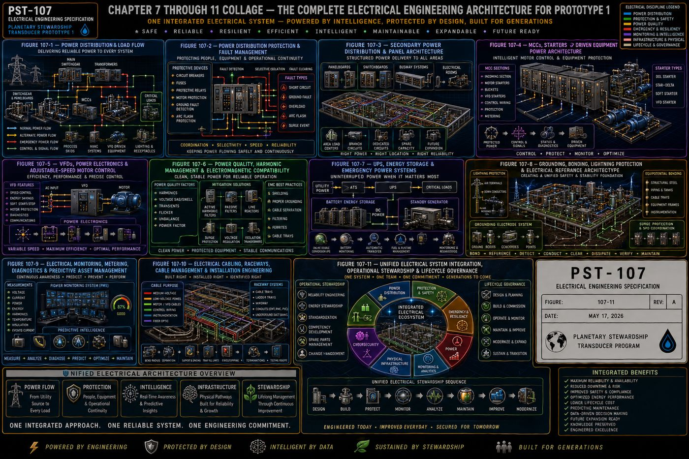

Part of an Eight-Volume Set
This is the seventh of eight detailed volume pages expanding on [[planetary-stewardship-transducer]] (AW-04). Where [[pst-102-electrical-systems]] (AW-11) established the platform's DC-centered power distribution architecture at a systems level, PST-107 goes deep on the AC power infrastructure specifically: utility service entrance, motor control, drives, power quality, backup power, and grounding, at a level of detail matching a full industrial electrical engineering specification.
PST-107 defines the complete electrical power infrastructure of Prototype 1: the electrical design philosophy and priority hierarchy, the incoming utility service and primary distribution architecture, the secondary distribution network, the motor control centers that drive every pump and fan, variable-frequency drives and adjustable-speed control, power quality and electromagnetic compatibility, uninterruptible power and emergency backup systems, the grounding, bonding, and lightning protection architecture, electrical monitoring and predictive asset management, cabling and raceway systems, and the closing philosophy of unified electrical governance.
All eleven chapters are covered below, following the specification's own structure: purpose, engineering intent, philosophy, architecture, and a chapter summary.
I. Electrical System Philosophy and Design Basis
The electrical architecture supplies, distributes, protects, conditions, monitors, and manages electrical energy for every subsystem comprising Prototype 1, treated as an integrated discipline supporting every mechanical, instrumentation, automation, communications, safety, and computational function rather than a standalone system. Prototype 1 employs a layered electrical architecture, incoming utility interface, primary and secondary distribution, motor control centers, variable-frequency drives, uninterruptible power supplies, emergency power, instrument and communications power, lighting, grounding, and surge protection, with each layer performing an independent function while contributing to overall system resilience.
Electrical energy is managed according to a strict priority hierarchy: personnel safety first, then functional safety, equipment protection, critical control continuity, communications continuity, essential process operation, energy efficiency, and finally operational optimization, with lower-priority electrical loads never permitted to compromise higher-priority functions. Electrical reliability is achieved through multiple complementary strategies, appropriate redundancy, conservative equipment ratings, predictive monitoring, and selective coordination, and personnel safety remains the highest priority of every design decision, equipment grounding, bonding, arc-flash mitigation, and lockout/tagout provisions, with no operational objective ever justifying compromised electrical safety. Electrical equipment is designed for efficient inspection, maintenance, and replacement from the outset, accessible locations, standardized components, and clear labeling, and energy stewardship, reduced losses, high motor efficiency, and power-factor optimization, supports both operational performance and long-term sustainability. The architecture reserves capacity for future growth, reserved panel capacity, spare conduit pathways, and scalable energy storage, so expansion requires minimal disruption to existing operations.
II. Incoming Utility Service and Primary Electrical Distribution
The incoming electrical service represents the primary energy gateway into Prototype 1, designed to maximize reliability, safety, maintainability, power quality, and future expansion while minimizing operational interruptions and electrical risk. Prototype 1 connects to the serving electrical utility through a dedicated service entrance defining service voltage, available fault current, service capacity, metering requirements, and the utility-to-facility ownership boundary, all clearly documented and permanently identified.
Service entrance equipment, main service disconnect, utility metering, surge protective devices, current and potential transformers, and protective relays, provides safe isolation for maintenance and emergency conditions, and the main switchgear serves as the central electrical distribution hub, performing power distribution, fault isolation, protective coordination, and load management while permitting safe operation with minimal interruption to unaffected loads. The primary bus system provides high-current capacity, mechanical strength, and short-circuit withstand capability, with bus ties and redundant sections incorporated where justified by reliability requirements, minimizing the impact of localized failures. Distribution feeders, transformer integration, protective coordination, and fault current management together establish the electrical backbone from which every downstream subsystem in Prototype 1 draws power.
III. Secondary Power Distribution, Switchboards, and Panelboard Architecture
Following the incoming utility service and primary distribution architecture, the secondary distribution system delivers conditioned electrical power to every operational subsystem throughout Prototype 1, organized hierarchically: main switchgear, secondary switchboards, distribution panels, motor control centers, instrument power panels, UPS distribution panels, communications power panels, lighting panels, and auxiliary equipment panels, with each level reducing complexity while preserving electrical coordination and operational flexibility.
Secondary switchboards distribute power from the primary electrical system to major facility loads, performing power distribution, circuit protection, and load segmentation while remaining accessible for inspection, maintenance, and future modification, and distribution panelboards provide localized electrical distribution for individual process areas, instrumentation, lighting, and auxiliary equipment. Loads are classified and segmented so that a fault in one circuit does not unnecessarily interrupt unrelated functions, branch circuit protection and load balancing distribute electrical demand evenly, and every panel and circuit carries permanent identification. The architecture reserves spare capacity at every distribution level, so future loads, additional treatment modules or expanded automation, can be added without redesigning the secondary distribution network.
IV. Motor Control Centers, Starters, and Driven Equipment Power Architecture
The motor-control architecture provides the controlled electrical interface between the facility distribution system and the mechanical equipment that performs the physical work of Prototype 1, process pumps, transfer and dosing pumps, ventilation fans, mixers, and compressors, with every driven load supplied, controlled, protected, monitored, and isolated according to its operational importance and mechanical characteristics. Motor control centers provide centralized power distribution, protection, control, and monitoring for groups of electrically driven loads, feeder distribution, motor branch protection, motor starters, variable-frequency drives, and soft starters, balancing centralized organization with localized fault containment.
MCC construction incorporates robust compartmentalized design, an incoming main section, horizontal and vertical bus, individual motor-control units, and mechanical and electrical interlocking, reducing accidental contact and containing localized equipment failures, with spare unit spaces reserved for future equipment. Motors receive dedicated protection, overload, short-circuit, and ground-fault protection, start permissives that prevent unsafe startup, and running interlocks that automatically coordinate equipment behavior with process conditions, and starting current is managed through sequential starting, soft starters, or VFDs to reduce electrical stress and mechanical shock. Motor temperature and vibration monitoring integrate directly with the instrumentation architecture described in PST-106, supporting predictive maintenance, and every MCC unit supports local and remote control, network communications, and safe maintenance isolation, with maintenance bypass provisions and a documented failure-response and power-restoration sequence for every driven load.
V. Variable-Frequency Drives, Power Electronics, and Adjustable-Speed Motor Control
Variable-frequency drives regulate motor speed and torque by controlling the frequency and voltage supplied to alternating-current motors, supporting precise flow control, pressure regulation, level stabilization, controlled acceleration and deceleration, and energy optimization, with every VFD application engineered as an integrated electrical, mechanical, control, thermal, and cybersecurity system. Variable-speed operation is applied where measurable process or lifecycle value justifies the added complexity, matching motor output to actual process demand, reducing unnecessary energy consumption, starting current, and mechanical wear.
A typical VFD performs three power-conversion stages, rectification, DC bus filtering, and inversion back to variable-frequency AC, and drive selection accounts for driven equipment application, load torque characteristics, motor compatibility, and required speed range. VFDs introduce engineering considerations beyond simple speed control, harmonic distortion and mitigation, electromagnetic interference, reflected-wave voltage and bearing currents at the motor, and carrier frequency selection, each addressed through defined mitigation strategies (line reactors, output filters, shielded VFD cable) rather than left to chance. Drives support safe torque off for functional safety integration, bypass architecture for maintenance continuity, and automatic restart and ride-through capability governed by documented engineering criteria rather than default settings. Multi-pump applications use pump affinity relationships, minimum-speed constraints, and parallel pump control to optimize energy use across the whole pumping system rather than a single drive in isolation, and every VFD is factory-acceptance tested, commissioned with baseline performance recording, and continuously condition-monitored throughout its service life.
VI. Power Quality, Harmonic Management, Voltage Stability, and Electromagnetic Compatibility
Power quality describes the condition of the electrical supply delivered to equipment: the electrical system maintains sufficiently stable voltage, frequency, waveform quality, phase balance, transient immunity, and electromagnetic compatibility to ensure reliable operation of motors, drives, instrumentation, PLCs, safety systems, and AI computing systems, treated as a system-level engineering responsibility rather than an isolated electrical problem. Electrical disturbances, undervoltage, overvoltage, sags, swells, and interruptions, are detected, classified, recorded, and corrected according to their operational consequence rather than uniformly.
Harmonic distortion, introduced primarily by VFDs and other power-electronic equipment, is analyzed by harmonic order and total harmonic distortion, studied at the design stage, and mitigated through line reactors, harmonic filters, or drive-topology selection where studies indicate a need. Power factor correction and reactive power management improve electrical efficiency and reduce utility penalties, and transient overvoltage protection, surge protective device coordination, and lightning-effects analysis work together with the grounding system described in Chapter VIII to protect sensitive equipment. Electromagnetic compatibility considerations, cable segregation, shielding, and ground-loop prevention, protect instrument power quality and communication-system compatibility specifically, since sensitive analytical equipment and control-system electronics are far more vulnerable to poor power quality than motors are. A dedicated monitoring architecture performs event recording, waveform capture, and root-cause analysis, correlating power-quality events with reliability outcomes so that disturbances are understood as engineering evidence rather than isolated nuisances.
VII. Uninterruptible Power Supplies, Energy Storage, and Emergency Power Systems
The emergency-power architecture maintains electrical continuity for critical systems during utility disturbances, electrical faults, maintenance activities, and abnormal operating conditions, existing to preserve safe operation rather than maximize production. Electrical loads do not receive identical backup provisions; backup capability reflects operational consequence.
| Tier | Loads |
|---|---|
| 1 — Life Safety | Emergency shutdown systems, safety PLCs, fire detection, emergency lighting, critical alarms |
| 2 — Critical Operations | PLC controllers, network switches, industrial communications, historians, cybersecurity systems, operator workstations, instrumentation power |
| 3 — Essential Process Equipment | Selected pumps, chemical systems, cooling systems, ventilation, auxiliary process equipment |
| 4 — Deferred Loads | Noncritical lighting, administrative equipment, convenience receptacles, maintenance loads, future expansion equipment |
This tiered hierarchy guides battery sizing, generator capacity, and restoration sequencing throughout the platform. Uninterruptible power supplies bridge the gap between a utility interruption and generator start, supported by battery monitoring and automatic transfer switches, and standby generators provide sustained backup power with defined starting, load sequencing, and load-shedding logic to avoid overloading the generator during startup. Emergency lighting and control-system continuity are treated as first-class requirements alongside process continuity, since the ability to see what is happening and maintain safe automation is often more important during an outage than continuing production, and the architecture includes black-start capability so the platform can restore itself from a fully de-energized state without external assistance.
VIII. Grounding, Bonding, Lightning Protection, and Electrical Reference Architecture
The grounding system provides a controlled, low-impedance electrical reference supporting personnel safety, equipment protection, reliable fault clearing, lightning-current dissipation, instrument accuracy, and electromagnetic compatibility, engineered as one integrated system rather than assembled as isolated local connections. Prototype 1 employs a coordinated grounding system, service grounding, equipment grounding, the grounding electrode system, structural bonding, process-piping bonding, instrument and control-system grounding, and lightning-protection grounding, all remaining coordinated through one unified reference architecture, with every conductive system carrying a documented relationship to it.
Grounding and bonding perform related but distinct functions: grounding establishes the connection to earth, while bonding maintains all exposed conductive components at the same electrical potential, and the grounding electrode system, evaluated against measured soil resistivity, is supplemented by a ground ring, structural steel bonding, and cable tray bonding to keep every conductive surface at a common reference. Instrument and control-system grounding follows a dedicated signal-reference architecture, separated from power grounding to prevent ground loops and preserve measurement accuracy, and lightning protection, air terminals, down conductors, and lightning-equipotential bonding, is coordinated with surge protection and communication-line protection so a lightning strike cannot find a path into sensitive electronics through an ungrounded pathway. Ground-fault detection, neutral integrity monitoring, and periodic ground-resistance and bonding-continuity testing confirm the system continues performing as designed throughout the platform's operational life, and every grounding connection, whether exothermic or mechanical, is documented, identified, and routed for inspection.
IX. Electrical Monitoring, Metering, Diagnostics, and Predictive Asset Management
The monitoring architecture continuously observes the electrical condition of Prototype 1, transforming electrical measurements into actionable engineering intelligence: electrical assets are not simply energized, they are continuously evaluated throughout their operational life. Prototype 1 continuously monitors the incoming utility service, main switchgear, secondary distribution, motor control centers, VFDs, UPS and battery systems, generators, transformers, protective relays, and grounding systems, so every major electrical asset possesses a measurable operational condition.
Monitored parameters span electrical quantities (voltage, current, power, power factor), asset-health indicators, and event and waveform records, feeding intelligent electrical devices and a dedicated power monitoring system that supports predictive diagnostics rather than reactive troubleshooting. An asset health index consolidates individual measurements into a single engineering indicator per device, and thermal monitoring and energy analytics extend electrical awareness into equipment condition and operating cost simultaneously. This monitoring architecture coordinates directly with the digital-twin and AI-assisted analytics established in PST-106, so electrical condition becomes one more validated input to the platform's overall operational intelligence rather than a siloed electrical-only concern.
X. Electrical Cabling, Raceway Systems, Cable Management, and Installation Engineering
The electrical distribution system is not simply interconnected wires; it functions as engineered infrastructure that safely transports electrical energy and information while minimizing losses, simplifying maintenance, reducing electromagnetic interference, and preserving long-term reliability, with every conductor carrying a defined engineering purpose. Cables are classified by function, medium- and low-voltage power cables, control cables, instrumentation cables, communications and fiber-optic cables, VFD motor cables, and grounding and bonding conductors, each with its own defined installation requirements.
Conductors are selected based on current-carrying capacity, voltage rating, short-circuit duty, ambient temperature, and installation method, with voltage drop and short-circuit withstand capability calculated rather than assumed. Raceway philosophy, cable tray systems, and defined cable separation requirements keep power, control, instrumentation, and communications conductors from interfering with one another electromagnetically, and VFD cable requirements, shielded, symmetrical construction, are called out specifically given the electrical noise VFDs generate. Every cable receives permanent identification and documented routing, firestopping and environmental protection preserve fire and moisture integrity at penetrations, and installation quality, proper terminations, is verified through inspection and testing before energization, with the complete cabling infrastructure managed across its lifecycle rather than treated as a one-time installation task.
XI. Unified Electrical System Integration, Operational Stewardship, and Lifecycle Governance
Rather than treating electrical systems as independent collections of equipment, this closing chapter defines the electrical infrastructure as one coordinated engineering ecosystem operating under a unified design philosophy, integrating the incoming utility service, primary and secondary distribution, motor control centers, VFDs, protective relays, power quality systems, UPS and battery storage, emergency generators, grounding, lightning protection, monitoring, and cabling infrastructure into a single environment where each subsystem supports and reinforces the performance of every other.
Electrical reliability depends on the coordinated performance of multiple engineering disciplines: proper grounding improves surge protection, power quality extends motor life, and monitoring improves maintenance planning, so no single subsystem can be optimized in isolation without considering its effect on the others. The chapter establishes governance for reliability, maintainability, standardization, and energy stewardship across the whole electrical infrastructure, coordinates electrical cybersecurity with the broader cybersecurity architecture in PST-106, and defines documentation governance, competency development, spare-parts strategy, and a modernization strategy that lets electrical technology evolve without disrupting the underlying design philosophy. The objective throughout is long-term engineering stewardship rather than short-term operation: every electrical decision is expected to remain sound and explainable decades after commissioning.

Protected — Detailed Engineering Package
Exact voltage classes, fault current calculations, protective relay settings and coordination studies, VFD sizing and harmonic mitigation calculations, battery and generator capacity sizing, grounding electrode resistance targets, conductor and raceway schedules, and the bill of materials are held under NDA pending requirements freeze and physics validation, consistent with the source specification's own stated pre-construction status.
Full Specification Available Under Signed NDA ↗Documentation Summary
The electrical design philosophy and priority hierarchy, the incoming utility and primary distribution architecture, the secondary distribution hierarchy, the motor control center architecture, the variable-frequency drive engineering framework, the power quality and electromagnetic compatibility program, the four-tier emergency power hierarchy, the unified grounding and lightning protection architecture, the electrical monitoring and predictive asset management framework, the cabling and raceway engineering standard, and the unified electrical governance philosophy are original work product of Joshua Farrior, developed under CHRISTOS™ Energy, Technology & Harmonic Design Consulting, LLC.
Held under NDA pending further development: exact voltage classes, fault current, and protective relay coordination studies; VFD sizing and harmonic mitigation calculations; battery, UPS, and generator capacity sizing; grounding electrode resistance targets and lightning protection zone calculations; conductor ampacity, voltage drop, and raceway fill calculations; the complete engineering drawing package; the bill of materials; and commissioning and acceptance test procedures beyond the summaries described above.
© 2026 Joshua Farrior · Christos™ Energy, Technology & Harmonic Design Consulting, LLC · All Rights Reserved · Business ID: 202511071941923 · Christos™ trademark registered on the USPTO Principal Register · christosenergy.com